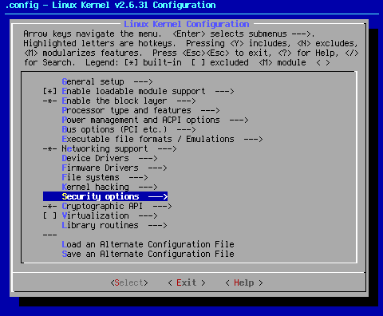
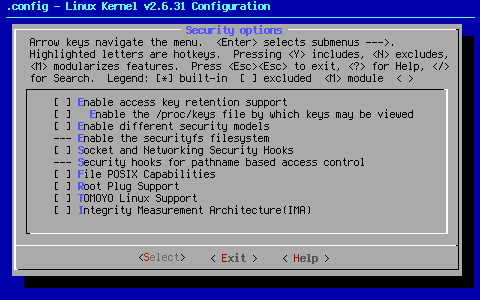

Custom Search
This page covers Security options.

Arrow key down to the area shown. When you hit <Select> at this point, you will bring up the following sub page:

As a general rule, even a woefully under-protected Linux install beats a fully patched Windows install (plus anti-virus programs) when it comes to security. While there are kernel settings that could render a system dead in the water via remote attack, for the most part, the design of the Linux operating system doesn't allow that to happen unless you allow someone to have your root password. Even then, the damage inflictable remotely is generally not as complete as the damage you can cause to a Windows install via remote attack.
There are numerous reasons for this. Suffice it to say that a well maintained Linux install is sure to be more secure and less prone to completely devastating attacks than Windows. To find out the basic differences, check this URL for an old but still fairly accurate article comparing the two.
The intent of a seed is getting your computer running Linux in a stable fashion. For that reason, all kernel-based security options are turned off. In my opinion, getting things running properly should always be the most important detail when it comes to setting up a Linux kernel. If you have security concerns, then you can play with security settings knowing you have a functional base to which you can return via the kernel seed.
Finally, everyone has a different definition of, "secure". A home user is going to have different needs than an Internet server admin. The last two things I want to do are to be liable for setting security settings that go "bump" in the night, or to support kernel-based security at all. The topic is huge, and far beyond the scope of anything I want to tackle with the kernel seed. Your security comfort level should be your security guide, not my seed settings.
For those with serious concerns about safety, your best bet is to go with a hardened-sources kernel. A standard vanilla kernel is not as secure as a hardened-sources kernel, even with everything turned on.
[ ] Enable access key retention support
The Linux key retention service is primarily intended to cache authentication data in the Linux kernel. The service can be used by remote filesystems or other kernel services to manage cryptography, authentication tokens, cross-domain user mappings, and other security concerns.
For those that need this support, turn this setting on.
[ ] Enable the /proc/keys file by which keys may be viewed
According to < Help >,"This option turns on support for the /proc/keys file - through which can be listed all the keys on the system that are viewable by the reading process."
Personally, I question the wisdom of making the keys visible.
[ ] Enable different security models
According to < Help >,"This allows you to choose different security modules to be configured into your kernel."
--- Enable the securityfs filesystem
According to < Help >,"This will build the securityfs filesystem. It is currently used by the TPM bios character driver and IMA, an integrity provider. It is not used by SELinux or SMACK."
This option is hardwired into the kernel, even though it is recommended that you say "no" to this option. Confused? Me too.
[ ] Socket and Networking Security Hooks
According to < Help >,"This enables the socket and networking security hooks. If enabled, a security module can use these hooks to implement socket and networking access controls."
To me, this sounds very much like a kernel-based firewall. While I'm sure this is workable, it seems that a well-configured iptables install will do the same thing with fine-grained control.
--- Security hooks for pathname based access control
This option is turned on when the [ ] TOMOYO Linux Support option is enabled.
[ ] File POSIX Capabilities
POSIX capabilities break the root privileges into smaller pieces, and allow tasks to run with only a subset of the root user's privileges. File capabilities allow such privileges to be attached to a program, greatly simplifying the use of capabilities.
[ ] Root Plug Support
This sample module prevents programs from running as egid==0, or root, without a specific USB device installed. If you have one of those devices, this is where you would enable it to work.
[ ] TOMOYO Linux Support
TOMOYO Linux is a security module which focuses on the behavior of a system. A process is created to achieve something. TOMOYO Linux lets each process declare behaviors and resources needed to achieve its purpose (like an immigration officer) and permits only declared behaviors and resources (like an operation watchdog). For more information on TOMOYO Linux, follow this link.
[ ] Integrity Measurement Architecture(IMA)
According to < Help >,"The Trusted Computing Group(TCG) runtime Integrity Measurement Architecture(IMA) maintains a list of hash values of executables and other sensitive system files, as they are read or executed. If an attacker manages to change the contents of an important system file being measured, we can tell."
For more information, click on this link.
This is the end of Settings Page 11.
Cheers,
Pappy